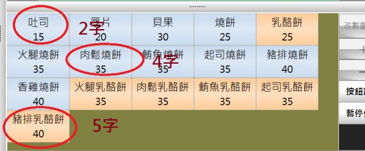
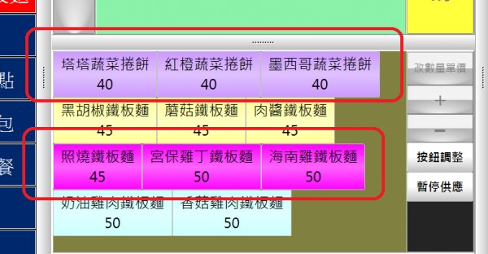
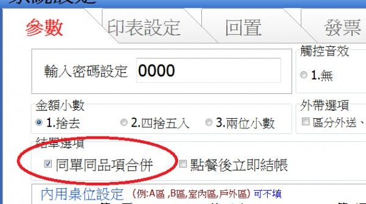
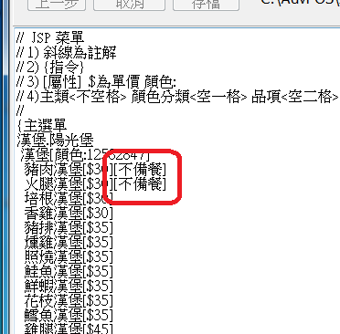

有關品項畫面擊出單問題
目前軟體使用上一些問題
1.餐點品項字數多寡影響版面參差不齊點餐時不易操作,可否自訂欄寬如6欄*4列等方式讓畫面較整齊易於辨識。
2.出單品項順序可否可以依大類排序
3.第二螢幕只給煎台備餐可否自訂顯示大類如飲料類或果醬類不顯示等。
以上麻煩版主了
1 個回答
您好
1.事實上 按鈕大小是有計算盡量能夠排成大小一致 字數控制在2~5字都可
切齊

由於系統設計成可適用於任何解析度 可隨意調整每個區塊大小 字數太多就比較難以算的剛好 所以建議您縮短餐點名稱
如果您無法控制字數 建議您可用顏色來區分

2.已經修正
只要這個參數有勾 就會依照大類排序 不勾會依照點餐原始順序

3.新增菜單指令 [不備餐] 在品項上標註 [不備餐] 便不會出現在備餐螢幕上

請至首頁下載更新
--------------------------------------------------------------
站長想徵求使用先用POS的店家照片
作為未來先用網站愛用案例的介紹 也為貴店做個小小的宣傳
照片及店名 地址 請寄 advposys@gmail.com
如能提供 站長感激不盡